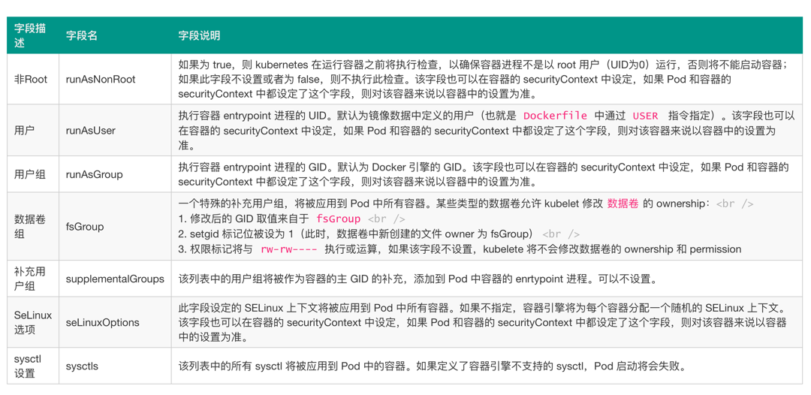

Kubernetes Pod/容器的安全管控 - Security Context¶
我们有时候在运行一个容器的时候，可能需要使用 sysctl 命令来修改内核参数，比如 net、vm、kernel 等参数，但是 systcl 需要容器拥有超级权限，才可以使用，在 Docker 容器启动的时候我们可以加上 --privileged 参数来使用特权模式。那么在 Kubernetes 中应该如何来使用呢？
这个时候我们就需要使用到 Kubernetes 中的 Security Context，也就是常说的安全上下文，主要是来限制容器非法操作宿主节点的系统级别的内容，使得节点的系统或者节点上其他容器组受到影响。Kubernetes 提供了三种配置安全上下文级别的方法：
- Container-level Security Context：仅应用到指定的容器
- Pod-level Security Context：应用到 Pod 内所有容器以及 Volume
- Pod Security Policies（PSP，废弃）：应用到集群内部所有 Pod 以及 Volume
我们可以用如下几种方式来设置 Security Context：
- 访问权限控制：根据用户 ID（UID）和组 ID（GID）来限制对资源（比如：文件）的访问权限
- Security Enhanced Linux (SELinux)：为对象分配 SELinux 标签
- Privileged（特权）模式运行
- Linux Capabilities：给某个特定的进程超级权限，而不用给 root 用户所有的 privileged 权限
- AppArmor：使用程序文件来限制单个程序的权限
- Seccomp：过滤容器中进程的系统调用（system call）
- AllowPrivilegeEscalation（允许特权扩大）：此项配置是一个布尔值，定义了一个进程是否可以比其父进程获得更多的特权，直接效果是，容器的进程上是否被设置 no_new_privs 标记。当出现如下情况时，AllowPrivilegeEscalation 的值始终为 true：
- 容器以 privileged 模式运行
- 容器拥有 CAP_SYS_ADMIN 的 Linux Capability
为 Pod 设置 Security Context¶
我们只需要在 Pod 定义的资源清单文件中添加 securityContext 字段，就可以为 Pod 指定安全上下文相关的设定，通过该字段指定的内容将会对当前 Pod 中的所有容器生效。
apiVersion: v1
kind: Pod
metadata:
name: security-context-pod-demo
spec:
volumes:
- name: sec-ctx-vol
emptyDir: {}
securityContext:
runAsUser: 1000
runAsGroup: 3000
fsGroup: 2000
containers:
- name: sec-ctx-demo
image: busybox
command: ["sh", "-c", "sleep 60m"]
volumeMounts:
- name: sec-ctx-vol
mountPath: /pod/demo
securityContext:
allowPrivilegeEscalation: false
在当前资源清单文件中我们在 Pod 下面添加了 securityContext 字段，其中：
- runAsUser 字段指定了该 Pod 中所有容器的进程都以 UID 1000 的身份运行
- runAsGroup 字段指定了该 Pod 中所有容器的进程都以 GID 3000 的身份运行
- 如果省略该字段，容器进程的 GID 为 root(0)
- 容器中创建的文件，其所有者为 userID 1000，groupID 3000
- fsGroup 字段指定了该 Pod 的 fsGroup 为 2000
- 数据卷 （对应挂载点 /pod/demo 的数据卷为 sec-ctx-demo） 的所有者以及在该数据卷下创建的任何文件，其 GID 都为 2000 下表是我们常用的一些 securityContext 字段设置内容介绍：
下表是我们常用的一些 securityContext 字段设置内容介绍：

直接创建上面的 Pod 对象：
➜ ~ kubectl apply -f security-context-pod-demo-1.yaml
➜ ~ kubectl get pods
NAME READY STATUS RESTARTS AGE
security-context-pod-demo 1/1 Running 0 6m45s
运行完成后，我们可以验证下容器中的进程运行的 ownership：
➜ ~ kubectl exec security-context-pod-demo top
Mem: 7586020K used, 422948K free, 298660K shrd, 1247656K buff, 3867660K cached
CPU: 2.1% usr 1.0% sys 0.0% nic 96.3% idle 0.2% io 0.0% irq 0.0% sirq
Load average: 0.30 0.35 0.35 1/956 50
PID PPID USER STAT VSZ %VSZ CPU %CPU COMMAND
46 0 1000 R 1292 0.0 0 0.0 top
1 0 1000 S 1280 0.0 0 0.0 sleep 60m
我们直接运行一个 top 进程，查看容器中的所有正在执行的进程，我们可以看到 USER ID 都为 1000（runAsUser 指定的），然后查看下挂载的数据卷的 ownership：
➜ ~ kubectl exec security-context-pod-demo -- ls -la /pod
total 8
drwxr-xr-x 3 root root 4096 Nov 26 15:44 .
drwxr-xr-x 1 root root 4096 Nov 26 15:44 ..
drwxrwsrwx 2 root 2000 6 Nov 26 15:43 demo
因为上面我们指定了 fsGroup=2000，所以声明挂载的数据卷 /pod/demo 的 GID 也变成了 2000。直接调用容器中的 id 命令：
我们可以看到 gid 为 3000，与 runAsGroup 字段所指定的一致，如果 runAsGroup 字段被省略，则 gid 取值为 0（即 root），此时容器中的进程将可以操作 root Group 的文件。
比如我们现在想要去删除容器中的 /tmp 目录就没有权限了，因为该目录的用户和组都是 root，而我们当前要去删除使用的进程的 ID 号就变成了 1000:3000，所以没有权限操作：
➜ ~ kubectl exec security-context-pod-demo -- ls -la /tmp
total 8
drwxrwxrwt 2 root root 4096 Oct 29 02:40 .
drwxr-xr-x 1 root root 4096 Nov 26 15:44 ..
➜ ~ kubectl exec security-context-pod-demo -- rm -rf /tmp
rm: can't remove '/tmp': Permission denied
为容器设置 Security Context¶
除了在 Pod 中可以设置安全上下文之外，我们还可以单独为某个容器设置安全上下文，同样也是通过 securityContext 字段设置，当该字段的配置与 Pod 级别的 securityContext 配置相冲突时，容器级别的配置将覆盖 Pod 级别的配置。容器级别的 securityContext 不影响 Pod 中的数据卷。如下资源清单所示：
apiVersion: v1
kind: Pod
metadata:
name: security-context-container-demo
spec:
securityContext:
runAsUser: 1000
containers:
- name: sec-ctx-demo
image: busybox
command: [ "sh", "-c", "sleep 60m" ]
securityContext:
runAsUser: 2000
allowPrivilegeEscalation: false
直接创建上面的 Pod 对象：
➜ ~ kubectl apply -f https:/www.qikqiak.com/k8strain/security/manifests/security-context-pod-demo-2.yaml
➜ ~ kubectl get pods
NAME READY STATUS RESTARTS AGE
security-context-container-demo 1/1 Running 0 5s
同样我们直接执行容器中的 top 命令：
➜ ~ kubectl exec security-context-container-demo top
Mem: 4991896K used, 3016924K free, 52308K shrd, 158364K buff, 3282996K cached
CPU: 2.6% usr 7.8% sys 2.6% nic 86.8% idle 0.0% io 0.0% irq 0.0% sirq
Load average: 0.12 0.09 0.12 1/848 10
PID PPID USER STAT VSZ %VSZ CPU %CPU COMMAND
6 0 2000 R 1292 0.0 1 0.0 top
1 0 2000 S 1280 0.0 3 0.0 sleep 60m
容器的进程以 UID 2000 的身份运行，该取值由 spec.containers[*].securityContext.runAsUser 容器组中的字段定义。Pod 中定义的 spec.securityContext.runAsUser 取值 1000 被覆盖。
设置 Linux Capabilities¶
我们使用 docker/nerdctl run 的时候可以通过 --cap-add 和 --cap-drop 命令来给容器添加 Linux Capabilities。那么在 Kubernetes 下面如何来设置呢？要了解如何设置，首先我们还是需要了解下 Linux Capabilities 是什么？
Linux Capabilities¶
要了解 Linux Capabilities，这就得从 Linux 的权限控制发展来说明。在 Linux 2.2 版本之前，当内核对进程进行权限验证的时候，Linux 将进程划分为两类：特权进程（UID=0，也就是超级用户）和非特权进程（UID!=0），特权进程拥有所有的内核权限，而非特权进程则根据进程凭证（effective UID, effective GID，supplementary group 等）进行权限检查。
比如我们以常用的 passwd 命令为例，修改用户密码需要具有 root 权限，而普通用户是没有这个权限的。但是实际上普通用户又可以修改自己的密码，这是怎么回事呢？在 Linux 的权限控制机制中，有一类比较特殊的权限设置，比如 SUID(Set User ID on execution)，允许用户以可执行文件的 owner 的权限来运行可执行文件。因为程序文件 /bin/passwd 被设置了 SUID 标识，所以普通用户在执行 passwd 命令时，进程是以 passwd 的所有者，也就是 root 用户的身份运行，从而就可以修改密码了。
但是使用 SUID 却带来了新的安全隐患，当我们运行设置了 SUID 的命令时，通常只是需要很小一部分的特权，但是 SUID 却给了它 root 具有的全部权限，一旦 被设置了 SUID 的命令出现漏洞，是不是就很容易被利用了。
为此 Linux 引入了 Capabilities 机制来对 root 权限进行了更加细粒度的控制，实现按需进行授权，这样就大大减小了系统的安全隐患。
什么是 Capabilities¶
从内核 2.2 开始，Linux 将传统上与超级用户 root 关联的特权划分为不同的单元，称为 capabilites。Capabilites 每个单元都可以独立启用和禁用。这样当系统在作权限检查的时候就变成了：在执行特权操作时，如果进程的有效身份不是 root，就去检查是否具有该特权操作所对应的 capabilites，并以此决定是否可以进行该特权操作。比如如果我们要设置系统时间，就得具有 CAP_SYS_TIME 这个 capabilites。下面是从 capabilities man page 中摘取的 capabilites 列表：
{kind=link}
如何使用 Capabilities¶
我们可以通过 getcap 和 setcap 两条命令来分别查看和设置程序文件的 capabilities 属性。比如当前我们是test 这个用户，使用 getcap 命令查看 ping 命令目前具有的 capabilities：
➜ ~ ll /bin/ping
-rwxr-xr-x. 1 root root 66176 Aug 4 2017 /bin/ping
➜ ~ getcap /bin/ping
/bin/ping = cap_net_admin,cap_net_raw+p
我们可以看到具有 cap_net_admin 这个属性，所以我们现在可以执行 ping 命令：
➜ ~ ping www.qikqiak.com
PING www.qikqiak.com.w.kunlungr.com (115.223.14.186) 56(84) bytes of data.
64 bytes from 115.223.14.186 (115.223.14.186): icmp_seq=1 ttl=54 time=7.87 ms
64 bytes from 115.223.14.186 (115.223.14.186): icmp_seq=2 ttl=54 time=7.85 ms
但是如果我们把命令的 capabilities 属性移除掉：
这个时候我们执行 ping 命令可以发现已经没有权限了：
因为 ping 命令在执行时需要访问网络，所需的 capabilities 为 cap_net_admin 和 cap_net_raw，所以我们可以通过 setcap 命令可来添加它们：
➜ ~ sudo setcap cap_net_admin,cap_net_raw+p /bin/ping
➜ ~ getcap /bin/ping
/bin/ping = cap_net_admin,cap_net_raw+p
➜ ~ ping www.qikqiak.com
PING www.qikqiak.com.w.kunlungr.com (115.223.14.188) 56(84) bytes of data.
64 bytes from 115.223.14.188 (115.223.14.188): icmp_seq=1 ttl=54 time=7.39 ms
命令中的 p 表示 Permitted 集合(接下来会介绍)，+ 号表示把指定的capabilities 添加到这些集合中，- 号表示从集合中移除。
对于可执行文件的属性中有三个集合来保存三类 capabilities，它们分别是：
- Permitted：在进程执行时，Permitted 集合中的 capabilites 自动被加入到进程的 Permitted 集合中。
- Inheritable：Inheritable 集合中的 capabilites 会与进程的 Inheritable 集合执行与操作，以确定进程在执行 execve 函数后哪些 capabilites 被继承。
- Effective：Effective 只是一个 bit。如果设置为开启，那么在执行 execve 函数后，Permitted 集合中新增的 capabilities 会自动出现在进程的 Effective 集合中。
对于进程中有五种 capabilities 集合类型，相比文件的 capabilites，进程的 capabilities 多了两个集合，分别是 Bounding 和 Ambient。
我们可以通过下面的命名来查看当前进程的 capabilities 信息：
➜ ~ cat /proc/7029/status | grep 'Cap' #7029为PID
CapInh: 0000000000000000
CapPrm: 0000000000000000
CapEff: 0000000000000000
CapBnd: 0000001fffffffff
CapAmb: 0000000000000000
然后我们可以使用 capsh 命令把它们转义为可读的格式，这样基本可以看出进程具有的 capabilities 了：
➜ ~ capsh --decode=0000001fffffffff
0x0000001fffffffff=cap_chown,cap_dac_override,cap_dac_read_search,cap_fowner,cap_fsetid,cap_kill,cap_setgid,cap_setuid,cap_setpcap,cap_linux_immutable,cap_net_bind_service,cap_net_broadcast,cap_net_admin,cap_net_raw,cap_ipc_lock,cap_ipc_owner,cap_sys_module,cap_sys_rawio,cap_sys_chroot,cap_sys_ptrace,cap_sys_pacct,cap_sys_admin,cap_sys_boot,cap_sys_nice,cap_sys_resource,cap_sys_time,cap_sys_tty_config,cap_mknod,cap_lease,cap_audit_write,cap_audit_control,cap_setfcap,cap_mac_override,cap_mac_admin,cap_syslog,35,36
Container Runtime Capabilities¶
我们说容器本质上就是一个进程，所以理论上容器就会和进程一样会有一些默认的开放权限，默认情况下 Docker/Containerd 会删除必须的 capabilities 之外的所有 capabilities，因为在容器中我们经常会以 root 用户来运行，使用 capabilities 现在后，容器中的使用的 root 用户权限就比我们平时在宿主机上使用的 root 用户权限要少很多了，这样即使出现了安全漏洞，也很难破坏或者获取宿主机的 root 权限，所以 Docker/Containerd 支持 Capabilities 对于容器的安全性来说是非常有必要的。
不过我们在运行容器的时候可以通过指定 --privileded 参数来开启容器的超级权限，这个参数一定要慎用，因为他会获取系统 root 用户所有能力赋值给容器，并且会扫描宿主机的所有设备文件挂载到容器内部，所以是非常危险的操作。
但是如果你确实需要一些特殊的权限，我们可以通过 --cap-add 和 --cap-drop 这两个参数来动态调整，可以最大限度地保证容器的使用安全。下面表格中列出的 Capabilities 是 Docker 默认给容器添加的，我们可以通过 --cap-drop 去除其中一个或者多个：

下面表格中列出的 Capabilities 是 Docker 默认删除的，我们可以通过--cap-add添加其中一个或者多个：

Warning
--cap-add和--cap-drop 这两参数都支持ALL值，比如如果你想让某个容器拥有除了MKNOD之外的所有内核权限，那么可以执行下面的命令： ➜ ~ sudo docker run --cap-add=ALL --cap-drop=MKNOD ...
比如现在我们需要修改网络接口数据，默认情况下是没有权限的，因为需要的 NET_ADMIN 这个 Capabilities 默认被移除了：
# docker 一样的方式
➜ ~ nerdctl run -it --rm busybox /bin/sh
/ # ip link add dummy0 type dummy
ip: RTNETLINK answers: Operation not permitted
/ #
所以在不使用 --privileged 的情况下（不建议）我们可以使用 --cap-add=NET_ADMIN 将这个 Capabilities 添加回来：
可以看到已经 OK 了。
Kubernetes 配置 Capabilities¶
上面我介绍了在 Docker 容器下如何来配置 Capabilities，在 Kubernetes 中也可以很方便的来定义，我们只需要添加到 Pod 定义的 spec.containers.securityContext.capabilities中即可，也可以进行 add 和 drop 配置，同样上面的示例，我们要给 busybox 容器添加 NET_ADMIN 这个 Capabilities，对应的 YAML 文件可以这样定义：
# cpb-demo.yaml
apiVersion: v1
kind: Pod
metadata:
name: cpb-demo
spec:
containers:
- name: cpb
image: busybox
args:
- sleep
- "3600"
securityContext:
capabilities:
add: # 添加
- NET_ADMIN
drop: # 删除
- KILL
我们在 securityContext 下面添加了 capabilities 字段，其中添加了 NET_ADMIN 并且删除了 KILL 这个默认的容器 Capabilities，这样我们就可以在 Pod 中修改网络接口数据了：
➜ ~ kubectl apply -f cpb-demo.yaml
➜ ~ kubectl get pods
NAME READY STATUS RESTARTS AGE
cpb-demo 1/1 Running 0 2m9s
➜ ~ kubectl exec -it cpb-demo /bin/sh
/ # ip link add dummy0 type dummy
/ #
在 Kubernetes 中通过 containers.securityContext.capabilities 进行配置容器的 Capabilities，当然最终还是通过容器运行时的 libcontainer 去借助 Linux kernel capabilities 实现的权限管理。